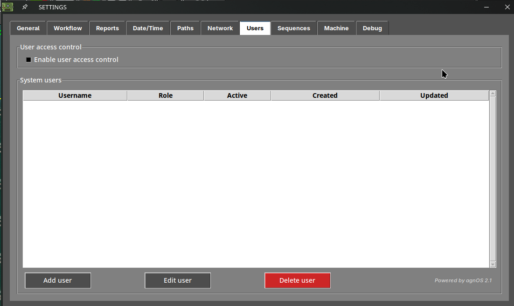
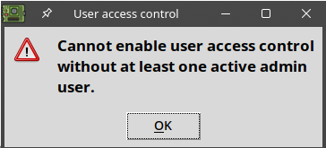
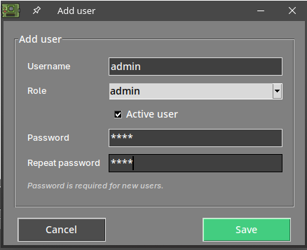
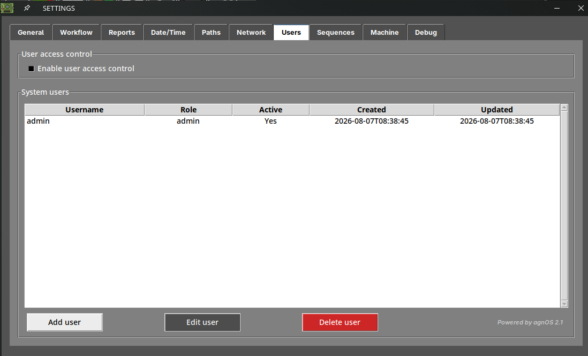
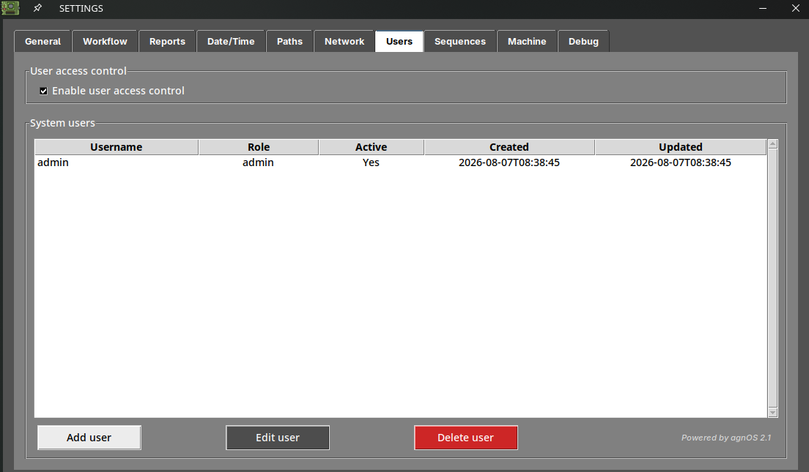
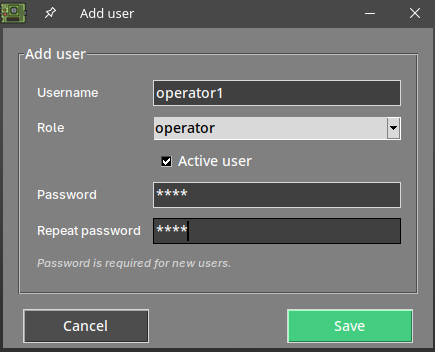
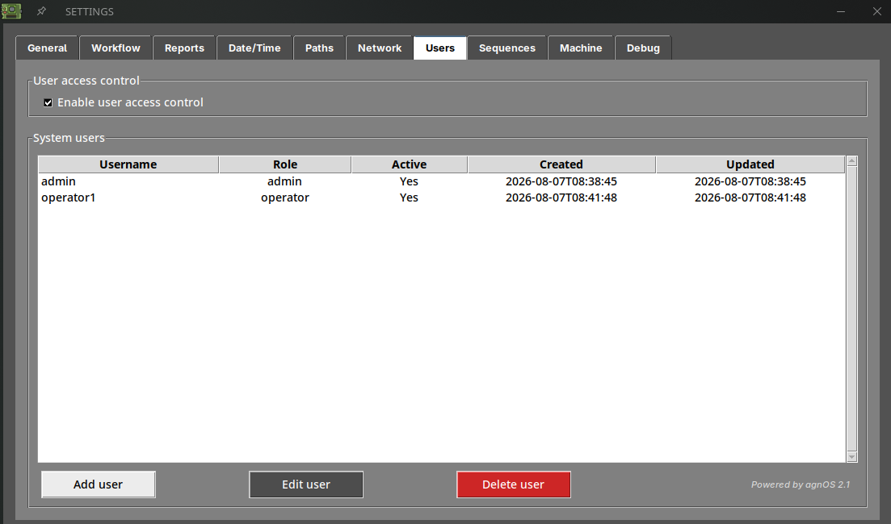
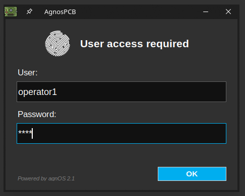

User access control¶
What is user access control?¶
By default, anyone with access to the AOI can use the software and change any of its settings.
User access control lets you create individual accounts and require a username and password every time the software starts. Each account has a role that determines what its user is allowed to do, so you can let an operator run inspections while keeping the configuration of the machine protected.
The two roles¶
Every account has one of these two roles:
| admin | operator | |
|---|---|---|
| General, Workflow and Report options | Yes | Yes |
| Date/time, Path and Share options | Yes | No |
| Users, Sequences, Machine and Debug | Yes | No |
| Take a REFERENCE image | Yes | Only if operator mode is disabled |
| Manage users | Yes | No |
| Calibrate the platform | Yes | No |
| Set the settings password | Yes | No |
| Generate a backup | Yes | No |
The operator role and operator mode are not the same thing
The operator role described here limits which tabs of the settings menu the user can open.
Operator mode, in Settings → Workflow, simplifies the interface and blocks the capture of REFERENCE images. It applies to whoever is using the machine, regardless of their role.
They can be used together: an operator account with operator mode enabled gets both the simplified interface and the restricted settings.
Setting it up¶
1. Open the Users tab¶
Open the settings menu and go to the Users tab. On a machine that has never been configured, the list is empty and the access control is disabled.

2. Create an administrator first¶
Before anything else you need an admin account. If you try to enable the access control without one, the software refuses:

Press Add user, fill in the username, select the admin role, leave Active user checked and type the password twice.

Press Save. The new account appears in the list, with the date it was created.

Important
Store the administrator password somewhere safe. Once the access control is enabled, this is the account that lets you back into the settings menu.
3. Enable the access control¶
With an active admin account in the list, enable Enable user access control.

4. Add the rest of the users¶
Add an account for each person who will use the machine, giving them the operator role unless they need to change the configuration.

The list shows every account with its role, whether it is active, and the dates on which it was created and last modified.

Press OK to save and close the settings menu.
Logging in¶
From the next start of the software, the User access required dialog asks for the credentials of one of the accounts you created.

The software then opens with the permissions of that account.
To close the session and let a different user log in, use the logout button of the platform status area.
Managing the accounts¶
Select an account in the list to work with it:
- Edit user — changes the role, the password or the active state of the selected account.
- Delete user — permanently deletes it. A confirmation is requested.
Deactivate instead of deleting
To stop someone from using the machine without losing the record of their account, edit the user and clear the Active user checkbox. The account stays in the list but can no longer log in.
Note
There must always be at least one active admin account. Keep this in mind before deactivating or deleting an administrator.